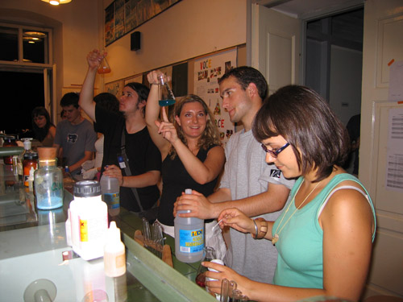

Dnevne aktivnosti
Kako izgleda tipičan dan na Ljetnoj školi znanosti?
 Ovisno o projektu, vrijeme se provodi u školi ili na terenu. Radom na projektu upravlja mentor, a taj rad obično počinje u 9 i završava u 18 sati. Većina posla obavlja se danju, no noćni izleti ili posjeti laboratoriju nisu isključeni. Svaku večer polaznici zajedno pohađaju barem jedno predavanje ili radionicu.
Ovisno o projektu, vrijeme se provodi u školi ili na terenu. Radom na projektu upravlja mentor, a taj rad obično počinje u 9 i završava u 18 sati. Većina posla obavlja se danju, no noćni izleti ili posjeti laboratoriju nisu isključeni. Svaku večer polaznici zajedno pohađaju barem jedno predavanje ili radionicu.
Kako je biti polaznik Ljetne škole znanosti?
Jako zabavno, ako voliš znanost. Također, može biti i jako korisno ako planiraš studirati nešto vezano za znanost. U školi se najčešće uče osnovni koncepti – nešto o kiselinama na kemiji, o elektricitetu na fizici ili o genima na biologiji. To je sve bitno za tvoje obrazovanje, no nedostaje ti jedan jako važan dio – znanstvena metoda.
Kako postavljamo pitanja o pojavama u prirodi? Kako na ta pitanja odgovaramo? I kako možeš biti siguran/na o ispravnosti onoga što si pronašao/la? Ljetna škola znanosti je mjesto gdje možeš naučiti sve o tome. S obzirom da vjerujemo da su najbolji načini za učenje primjeri i praksa, stavit ćemo te u položaj znanstvenika: radit ćeš na specifičnoj temi s voditeljem projekta i još dva polaznika.
Moram li znati nešto unaprijed o projektu?
U ovoj se fazi ne trebaš brinuti da li znaš dovoljno gradiva da sudjeluješ. U današnje vrijeme znanost je toliko specijalizirana da se često treba krenuti od samog početka. Ali ono što je bitno jest: da li znaš kako učiti? Ako to možeš u školi, onda sigurno možeš i ovdje. U svakom slučaju, voditelj projekta je tu da odgovori na sva tvoja pitanja.
Tko sve dolazi na Ljetnu školu znanosti?
Ljetna škola znanosti je jedinstveno mjesto jer možeš upoznati druge srednjoškolce s interesom za znanost. Također možeš upoznati mnogo ljudi koji rade u područjima primjenjene ili temeljne znanosti. Neki su voditelji projekata, a drugi su predavači. U radu s nekima od njih naučit ćeš još jednu važnu stvar o znanosti – bit je u ljudima. Moraš biti spreman/na na timski rad, na prezentiranje i dijeljenje svojih ideja, ali u isto vrijeme i na slušanje i poštivanje drugih.Što se komunikacije tiče – to ćeš također uvježbati. Imat ćeš nekoliko prilika za prezentiranje svog rada i rezultata.
Zašto je engleski službeni jezik?
Zato što je to danas praktički službeni jezik znanosti. Većina znanstvene literature pisana je na engleskom i većina komunikacije na konferencijama i ljetnim školama se odvija na engleskom. Ako se odlučiš na studij kemije, biologije ili fizike morat ćeš koristiti knjige pisane na engleskom. Ovo je dobar način da već sad počneš vježbati. Nemoj se zabrinjavati ukoliko tvoj engleski nije savršen, ako možeš komunicirati i predstaviti svoje ideje, to je dovoljno!
Copyright © 2014 Društvo za edukaciju van okvira (EVO). Sva prava pridržana.
Web dizajn: Martina Mijušković. Općeniti tekst: Branimir Lukić i Martina Mijušković. Prijevod na hrvatski: Matilda Maleš.